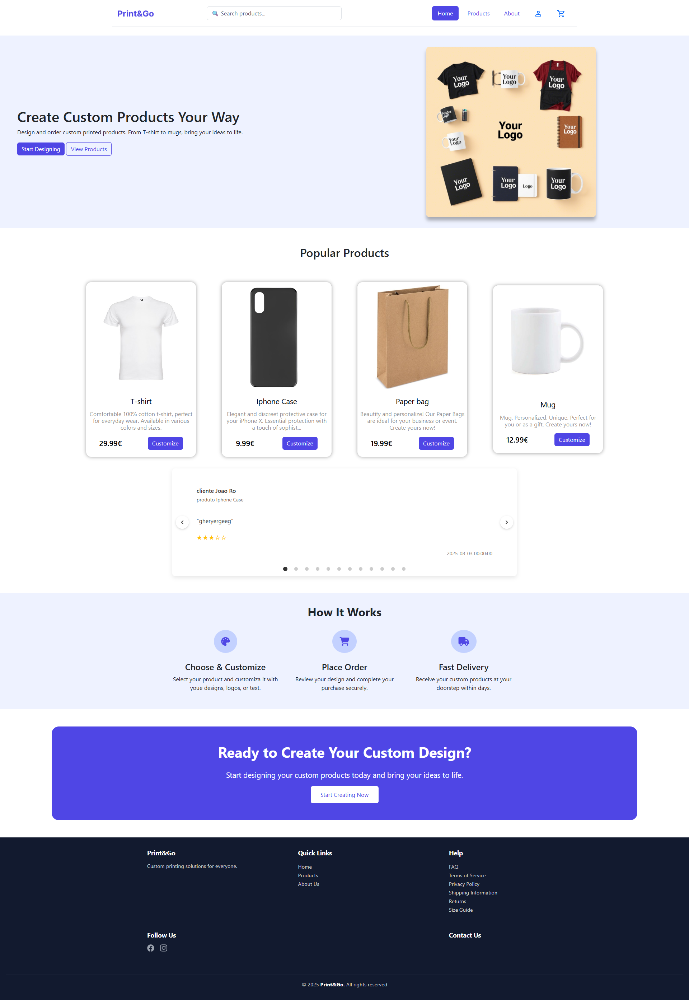
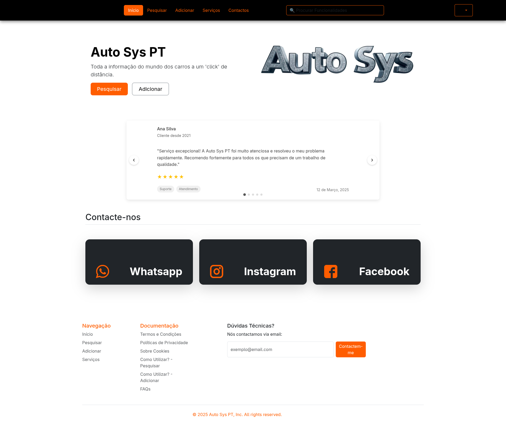

Projetos
Forma Futuro
A Forma Futuro Portugal é uma entidade formadora acreditada pela DGERT, especializada em formação profissional e consultoria em várias áreas. O website permite carregar dinamicamente cursos, submeter inscrições e gerir formação certificada. Uma camada back-end expõe endpoints como /api/courses, /api/courses/:id, /api/enrollments, ligando a uma base de dados relacional (ex.: MySQL) com queries parametrizadas. O front-end consome a API e renderiza componentes como cartões de curso, filtros e formulários. A arquitetura separa camadas: UI → REST API → Base de dados.
Print & Go
A Print & Go é uma plataforma de e-commerce criada num projeto colaborativo de Desenvolvimento Web, focada em oferecer uma experiência de compra simples para produtos personalizáveis. Implementei de raiz uma REST API para a comunicação entre back-end e base de dados, garantindo separação de camadas e escalabilidade. A API foi totalmente desenhada e desenvolvida pela equipa (rotas, métodos HTTP e queries SQL), suportando autenticação, catálogo, carrinho e encomendas.

Auto Sys PT
A Auto Sys PT é uma plataforma web para oficinas automóvel gerirem e acompanharem toda a atividade de serviço de veículos. Permite ver o histórico completo de intervenções (manutenções, reparações, sinistros e serviços regulares). Centraliza dados técnicos e históricos, melhorando transparência e decisão. Inclui um back-office para gestão de utilizadores, dados de veículos, oficinas e módulos adicionais (controlo de dados, validação de serviços e gestão de diagnósticos). Os clientes podem deixar feedback, promovendo melhoria contínua e credibilidade.
